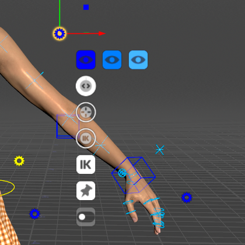
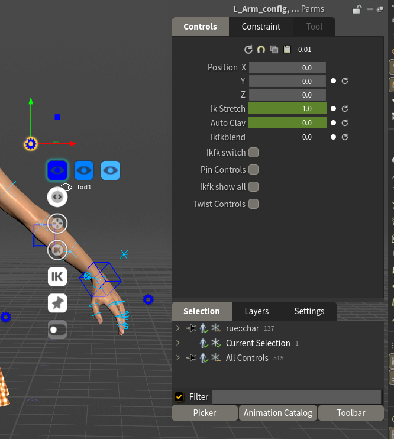

Gears
A gear is a control that holds settings instead of moving a joint. Each body part has one beside it, and there are three beside the head for the face and eyes.
This page lists every gear and every setting on it, under the name the HUD shows.
How a gear works
Click a gear to see its settings as a stack of small icons beside it. They show only while that gear is the selected control.

On a body gear the three blue eye icons in a row are the LOD buttons, the round dials are sliders, the IK square is the IK/FK switch, the pushpin is pinControls and the switch icons are toggles. Hover an icon to see its name.
Press G to see them all at once: the HUD's Controls tab lists every setting of the selected gear with its value. It shows each name spaced out and capitalised, so IkStretch reads Ik Stretch, AutoClav Auto Clav and ikfk_show_all Ikfk show all. The tables below use the names.

How to use each kind:
- Toggle: click to turn it on or off.
- Slider: click and drag to change the value. Hold Shift to change it more slowly, Ctrl to change it in whole steps, Ctrl+Shift to change it faster. You can also type a value in the HUD.
- Menu: click to open its list.
- Eye icons: the LOD buttons (see below).
Keyable or setting. Some gear values are keyable channels, keyed like any other control: they can change over the shot, and they live on the animation layers. The rest are settings: one value for the whole shot, never keyed. Clear Body Keys and Clear Face Keys don't touch settings. The tables mark which is which.
Moving a gear. A gear is drawn at a fixed offset from its body part. Drag it to move it out of the way. The HUD lists its place as position.
SideFX's documentation: Gear menu.
The buttons every body gear has
- LOD 1, LOD 2 and LOD 3 (eye icons,
lod1lod2lod3in the HUD) are independent show/hide toggles, one per detail level, not a level of detail you step through. On the root gear they act on the whole rig; on any other gear, only on that body part. Use them to clear controls out of the way while you work on one area. (Detail levels: see The Controls.) - pinControls lists that gear's controls in the Animation Editor, so their curves are in view while you key. It does not lock the pose. Pinning another gear replaces the list rather than adding to it. Each table below says what that gear's pin lists.
Root gear
Yellow, on the ground between the feet.
Spine gear
Yellow, beside the waist. It also covers the neck and head, which have no gear of their own.
Arm gears
One per arm, blue for the left and red for the right, beside the upper arm.
Hand gears
One per hand, beside it.
The fingers have no IK; you pose them with their rings, the Character Picker's Hands tab or the hand poses in the Animation Catalog.
Leg gears
One per leg, beside the thigh. Same as the arm gears, without the clavicle.
Foot gears
One per foot, beside it. Roll and tilt drive the foot's pivots for you, so you can roll a step with one slider instead of rotating three controls.
Eyes gear
Yellow, the lowest of the three gears beside the head. It holds the Look At settings, with 0 to 1 in place of iClone's 0 to 100. lookAt has no iClone slider: it stands in for iClone's target key and its transition (see Compared with iClone). headWeight, bodyWeight, angleLimit and the lean sliders do nothing while lookAt is 0. browFollow works whenever the eyes look up or down, Look At or not.
Face gear
Pink, the top gear beside the head. None of its settings is keyable.
Face Blendshapes gear
Pale blue, the middle gear beside the head. It has a keyable channel for every Character Creator face shape on the character, named after the shape (Brow_Raise_Inner_L, Jaw_Open, V_Wide and so on), each 0 by default.
It draws no icons. Select the gear and its channels are listed in the HUD (G) and in the Animation Editor.
Each channel adds onto its face shape. A face shape's final value is the sum of three things:
- its
face_<shape>channel: the clip, and what Face Key Muscle, Face Puppet and Auto Blink key, - its slider on the face, if it has one,
- its channel on this gear.
That's why a shape can move with its slider at zero, and why a clip keeps playing under a slider or a gear value: they add, they don't replace.
Catalog expressions are written on this gear's channels. Because the channels belong to this gear, select it before you apply an expression with controls selected, or before Add to New Layer. It's also why an expression adds onto the clip's face instead of replacing it. See Animating.
Use this gear when you want a face shape by number: select the gear, press G, and type the value or Alt+click to key it.